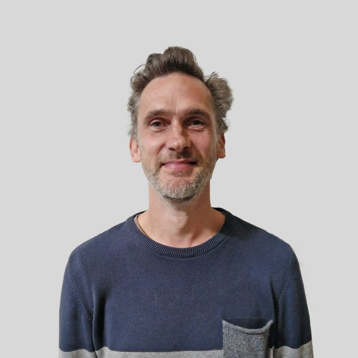
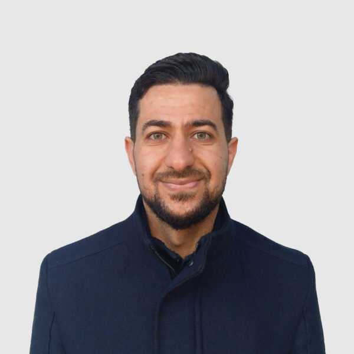
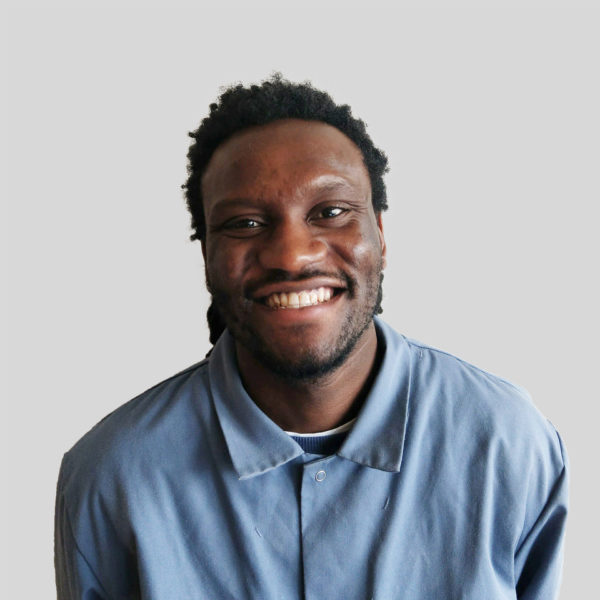

Over timmerwerkt
Hans en Olivier richtten in 2018 Timmerwerkt op. De missie: timmeren aan een warme samenleving door meubels op maat te maken met gemotiveerde nieuwkomers.
Timmeren aan een warme samenleving
Voor veel nieuwkomers zijn de obstakels om een opleiding te volgen of werk te vinden groot: te weinig kennis van de taal, niet de juiste diploma’s, vooroordelen op de arbeidsmarkt … Bij Timmerwerkt kunnen gemotiveerde nieuwkomers zinvol aan de slag.
Het is onze overtuiging dat de maatschappij nood heeft aan meer warmte: meer tijd maken voor elkaar, meer luisteren naar elkaar, meer openheid voor elkaar. Vanuit die houding vertrekken al onze relaties: die met klanten, met leveranciers, met medewerkers en met partners. We streven naar een warmere en tragere samenleving die zich kan aanpassen en open staat voor verandering.
Team Timmerwerkt
Hans Gruyaert
Hansheeft een achtergrond als lesgever in IT. Via een omweg in de sociale sector heeft hij zich gevestigd als zelfstandig meubelmaker. Zijn focus binnen Timmerwerkt is vooral commercieel en creatief.

Olivuer Provost
Oliis opvoeder en heeft ervaring in het creatief en actief stimuleren van kwetsbare doelgroepen. Met een pak ervaring in de jeugd- en sociaalartistieke sector beschikt hij over een breed netwerk van dienstverleners en creatieve duizendpoten.

Besmillah Husaini
Besmillah was meubelmaker in Afghanistan, maar heeft hebben en houden moeten achterlaten. Langzaam maar zeker is hij een nieuw leven aan het opbouwen met z'n vrouw en dochtertje. Beluister zijn verhaal hier.

Pauwel, geboren in een schrijnwerkersnest, is een duizendpoot. Hij vormt samen met Besmillah ons vaste plaatsingsteam. Hij combineert z'n werkzaamheden bij Timmerwerkt met het organisaren van optredens bij muzieklabel K-RAA-K.

Senne Neyens
Senne is grafisch vormgever en combineert zijn creativiteit al een paar jaar met het maken van meubels. Hij trekt al eens graag de wijde wereld in en is all-round nice guy.
Omar Saadi Ahmed
Omar is afkomstig uit Fallujah, Irak. Hij studeerde aan de hogeschool en deed ervaring op als schrijnwerker en schilder in het familiebedrijf. Leergierig, gedreven, ambitieus.

Mattias Peeters
Mattias is architect en meubelmaker. Naast z'n eigen werk engageert hij zich sinds kort ook als ontwerper binnen Timmerwerkt. Hij vindt zingeving belangrijk, en toeval wil, wij ook!

Tina Peirlinck
Tina is architecte en meubelmaakster. Bij Timmerwerkt staat ze mee in voor het ontwerp en uitwerken van de projecten. Naast haar werk bij Timmerwerkt runt ze Atelier ZAAG.

Hyusein Ahmedov
Hyusein is 55 jaar en van Bulgaarse origine. Hij had werk maar is dit door de corona-crisis verloren. Via z'n werk bij de spoorwegen heeft hij ervaring opgedaan met houtbewerking, slijpen en lassen. Hij wil zich nu richten op het hout en z'n Nederlands verbeteren.
Henock Ngama Bokuango
Henock woont al 8 jaar in België en is carrosier van opleiding. Aangezien hij geen werk vind is hij zijn werkveld aan het verbreden en loopt nu 6 maanden stage bij Timmerwerkt waarin hij voornamelijk het vernis- en lakwerk voor z'n rekening neemt.

Dawit Berhane Berhe
Dawit zat in het leger in Erithrea. Om aan de repressieve en uitzichtloze toestand in z'n land te ontsnappen is hij, via heel wat omzwervingen, in België terecht gekomen. Nu is hij zich, eerst bij Compaan en nu bij Timmerwerkt, tot meubelmaker aan het omscholen.

Ibrahim Alnassry
Ibrahim was politieagent in Tikrit (Irak). Na een opleiding binnenschrijnwerk bij de VDAB en een stage van 6 maanden bij Timmerwerkt is hij op zoek naar werk als meubelmaker. Beluister zijn verhaal hier.